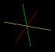

Step 6
You will notice that there are now two entries in the navigation
window. One representing the sphere source, the other the shrink
filter. These two elements form a data pipeline. The polygonal data
generated by the sphere source is processed (shrinked) by the filter
to produce the data displayed on the screen (note that the output
of the sphere source is not displayed). Currently, the shrink filter
is the active element and is displayed on the parameter page. To change
a property of the sphere source, we have to make it the active element.
Select Sphere1 from the Navigation window by clicking on it.

In the Parameters windows,
set the starting phi angle to 30 and click Accept.

Step 7
Rotate the camera around the sphere by clicking the left mouse button
near the center of the sphere and dragging the mouse to observe the
effect of change the starting phi angle. You will notice that clicking
the left button and dragging the mouse will have different effects
depending on the position of the pointer. If the pointer is close to
the center of rotation (shown by the 3D cursor), 
dragging the mouse will rotate the camera around the
center in 3D. Otherwise, the rotation will be around an axis normal
to the plane of view.
Last modified: Mon Dec 3 10:25:18 EST 2001